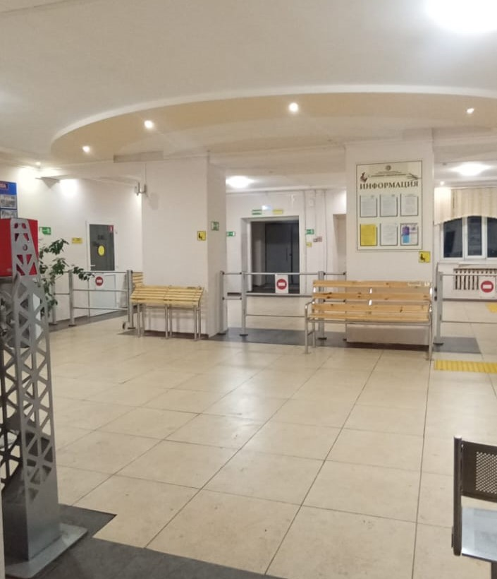

❮

❯
Автомобильно-технический колледж - это учебное заведение, которое предлагает программы обучения по автомобильным технологиям, техническому обслуживанию и ремонту автомобилей, а также другим связанным с автомобилями дисциплинам.
Эти программы могут включать курсы по механике, электронике, автомобильной инженерии, а также практическое обучение в мастерских и на реальных автомобилях.
Выпускники колледжа могут работать в автомобильной промышленности, автосервисах, транспортных компаниях или других предприятиях, связанных с автомобильной индустрией.